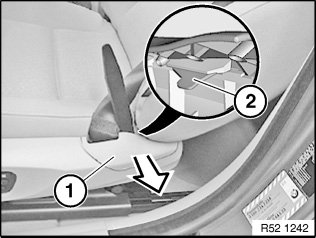
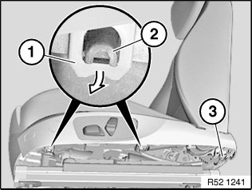
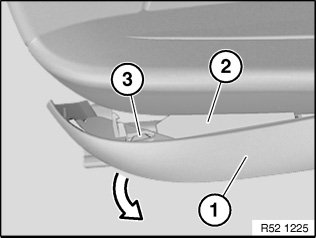
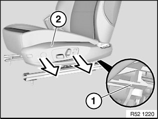
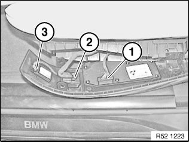
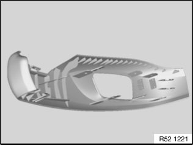
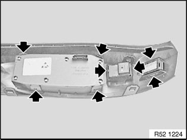

52 14 040 Removing and Installing/Replacing Outer Cover on Front Left or Right Seat (Normal/Electric)
52 14 040 Removing and installing/replacing outer cover on front left or right seat (normal/electric)

Necessary preliminary tasks:
Remove front seat.
NOTE: Picture shows installed seat by way of example.

Move backrest to full rearward position.
Unclip release tab (2) for belt anchor fitting trim (1) with plastic wedge.

Release screw or catch (3).
Lever lugs (1) out of holders (2).

IMPORTANT: Cover (1) could detach itself in from area with carrier section (2) from seat mechanism.
Carefully pull cover (1) with carrier section (2) in front area off seat mechanism.
Press unlocking lug (3) with screwdriver and detach cover from carrier section.

Raise lug (1) and unlock.
Reach between seat padding and cover (2) and pull cover off carrier section.
Unlock and disconnect plug connections:

1. Switch combination
2. Lumbar support
3. Backrest width adjustment

Installation:
Retaining clips and lugs of cover must not be damaged.
Replacement only:

Unlock catches of switch housing and remove switch from cover.